Die Stoffgruppendefinitionen der Nummern 1 bis 7 schließen alle denkbaren geladenen Formen, Stereoisomere und Salze eines erfassten Stoffes ein. In den Stoffgruppendefinitionen festgelegte Molekülmassenbegrenzungen gelten bei geladenen Formen und Salzen nur für den Molekülteil ausschließlich des Gegen-Ions. Von den Stoffgruppendefinitionen erfasst sind auch sämtliche nach den folgenden Stoffgruppendefinitionen mögliche isotopensubstituierte Verbindungen.
- 1.
Von 2-Phenethylamin abgeleitete Verbindungen
Eine von 2-Phenethylamin abgeleitete Verbindung ist jede chemische Verbindung, die von einer 2-Phenylethan-1-amin-Grundstruktur abgeleitet werden kann (ausgenommen 2-Phenethylamin selbst), eine maximale Molekülmasse von 500 u hat und dem nachfolgend beschriebenen modularen Aufbau aus Strukturelement A und Strukturelement B entspricht.
| 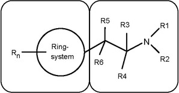 |
| Strukturelement A | Strukturelement B |
Dies schließt chemische Verbindungen mit einer Cathinon-Grundstruktur (2-Amino-1-phenyl-1-propanon) ein:
| 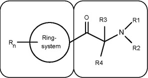 |
| Strukturelement A | Strukturelement B |
Nicht von der Stoffgruppe Nummer 1 erfasst werden Stoffe, die zwar eine Definition dieser Stoffgruppe erfüllen, jedoch zugleich eine in den Stoffgruppendefinitionen der Nummern 2 bis 7 genannte Kern- oder Grundstruktur besitzen und von der Stoffgruppendefinition der jeweiligen Nummer nicht erfasst werden.
- 1.1
Strukturelement A
Für das Strukturelement A sind die folgenden Ringsysteme eingeschlossen, wobei sich das Strukturelement B an jeder Position des Strukturelements A befinden kann: Phenyl-, Naphthyl-, Tetralinyl-, Methylendioxyphenyl-, Ethylendioxyphenyl-, Furyl-, Pyrrolyl-, Thienyl-, Pyridyl-, Benzofuranyl-, Dihydrobenzofuranyl-, Indanyl-, Indenyl-, Tetrahydrobenzodifuranyl-, Benzodifuranyl-, Tetrahydrobenzodipyranyl-, Cyclopentyl- und Cyclohexylring.
| 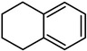 | 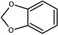 |
| Tetralinyl- | Methylendioxyphenyl- |
| 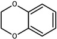 | 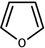 |
| Ethylendioxyphenyl- | Furyl- |
| 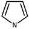 | 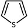 | 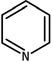 |
| Pyrrolyl- | Thienyl- | Pyridyl- |
| 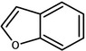 | 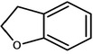 |
| Benzofuranyl- | Dihydrobenzofuranyl- |
| 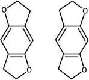 | 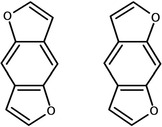 |
| Tetrahydrobenzodifuranyl- | Benzodifuranyl- |
| 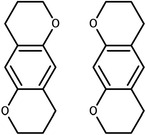 | 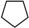 | 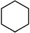 |
| Tetrahydrobenzodipyranyl- | Cyclopentyl- | Cyclohexyl- |
Diese Ringsysteme können an jeder Position mit folgenden Atomen oder Atomgruppen (Rn) substituiert sein:
Wasserstoff, Fluor, Chlor, Brom, Iod, Alkyl- (bis C8), Alkenyl- (bis C8), Alkinyl- (bis C8), Alkoxy- (bis C7), Carboxy-, Alkylsulfanyl- (bis C7) und Nitrogruppen.
Die aufgeführten Atomgruppen können weiterhin mit beliebigen, chemisch möglichen Kombinationen der Elemente Kohlenstoff, Wasserstoff, Stickstoff, Sauerstoff, Schwefel, Fluor, Chlor, Brom und Iod substituiert sein. Die auf diese Weise entstehenden Substituenten dürfen dabei eine durchgehende Kettenlänge von maximal acht Atomen aufweisen (ohne Mitzählung von Wasserstoffatomen). Atome von Ringstrukturen werden dabei nicht in die Zählung einbezogen.
Moleküle, bei denen durch Rn cyclische Systeme entstehen, die an das Strukturelement A anelliert sind, werden von der Stoffgruppendefinition nicht erfasst.
- 1.2
Strukturelement B
Die 2-Aminoethyl-Seitenkette des Strukturelements B kann mit folgenden Atomen, Atomgruppen oder Ringsystemen substituiert sein:
- a)
R1 und R2 am Stickstoffatom:
Wasserstoff, Alkyl- (bis C6), Cycloalkyl- (Ringgröße bis C6), Benzyl-, Alkenyl- (bis C6), Alkinyl- (bis C6), Alkylcarbonyl- (bis C6), Alkyloxycarbonyl- (Alkylrest bis C6), Alkylthiocarbonyl- (Alkylrest bis C6), Alkylcarbamoyl- (Alkylrest bis C6), Arylcarbonyl- (Arylrest bis C10), Hydroxy- und Aminogruppen. Ferner sind Stoffe eingeschlossen, bei denen das Stickstoffatom Bestandteil eines nichtaromatischen gesättigten oder ungesättigten cyclischen Systems ist (beispielsweise Pyrrolidinyl-, Piperidinyl-Ringe). Ein Ringschluss des Stickstoffatoms unter Einbeziehung von Teilen des Strukturelements B (Reste R3 bis R6) ist möglich. Die dabei entstehende Molekülstruktur muss hinsichtlich der Substituenten auch ohne den erfolgten Ringschluss zum Strukturelement B konform zu Nummer 1.2 Buchstabe a sein. Die dabei entstehenden Ringsysteme können die Elemente Kohlenstoff, Sauerstoff, Schwefel, Stickstoff und Wasserstoff enthalten. Diese Ringsysteme dürfen fünf bis sieben Atome umfassen. Eine Doppelbindung als Brücke zum Strukturelement B ist möglich. Die Reste R1/R2 können ausschließlich in dem bei einem Ringschluss mit Teilen des Strukturelements B entstehenden Ringsystem als doppelt gebundener Rest (Iminstruktur) vorliegen.
Ausgenommen von den erfassten Stoffen der Stoffgruppe der von 2-Phenethylamin abgeleiteten Verbindungen sind Verbindungen, bei denen das Stickstoffatom direkt in ein cyclisches System integriert ist, das an das Strukturelement A anelliert ist.
Die Substituenten R1 und R2 können (bei Ringschlüssen nur nach dem Ringschluss) weiterhin mit beliebigen, chemisch möglichen Kombinationen der Elemente Kohlenstoff, Wasserstoff, Stickstoff, Sauerstoff, Schwefel, Fluor, Chlor, Brom und Iod substituiert sein. Die auf diese Weise entstehenden Substituenten R1/R2 dürfen dabei eine durchgehende Kettenlänge von maximal zehn Atomen aufweisen (ohne Mitzählung von Wasserstoffatomen). Atome von Ringstrukturen werden dabei nicht in die Zählung einbezogen.
- b)
R3 und R4 am C1-Atom sowie R5 und R6 am C2-Atom:
Wasserstoff, Fluor, Chlor, Brom, Iod, Alkyl- (bis C10), Cycloalkyl- (Ringgröße bis C10), Benzyl-, Phenyl-, Alkenyl- (bis C10), Alkinyl- (bis C10), Hydroxy-, Alkoxy- (bis C10), Alkylsulfanyl- (bis C10) und Alkyloxycarbonylgruppen (Alkylrest bis C10), einschließlich der chemischen Verbindungen, bei denen Substitutionen zu einem Ringschluss mit dem Strukturelement A oder zu Ringsystemen, die die Reste R3 bis R6 enthalten, führen können. Diese Ringsysteme dürfen vier bis sechs Atome umfassen.
Die aufgeführten Atomgruppen und Ringsysteme können zudem mit beliebigen, chemisch möglichen Kombinationen der Elemente Kohlenstoff, Wasserstoff, Stickstoff, Sauerstoff, Schwefel, Fluor, Chlor, Brom und Iod substituiert sein. Die auf diese Weise entstehenden Substituenten R3 bis R6 dürfen dabei eine durchgehende Kettenlänge von maximal zwölf Atomen aufweisen (ohne Mitzählung von Wasserstoffatomen). Atome von Ringstrukturen werden dabei nicht in die Zählung einbezogen.
Sofern die Reste R3 bis R6 Bestandteil eines Ringsystems sind, das das Stickstoffatom des Strukturelements B enthält, gelten für weitere Substituenten die Beschränkungen gemäß Buchstabe a.
- c)
Carbonylgruppe in beta-Stellung zum Stickstoffatom (sogenannte bk-Derivate, siehe Abbildung der Cathinon-Grundstruktur unter Nummer 1: R5 und R6 am C2-Atom: Carbonylgruppe (C=O)).
- 2.
Cannabimimetika/synthetische Cannabinoide
- 2.1
Von Indol, Pyrazol und 4-Chinolon abgeleitete Verbindungen
Ein Cannabimimetikum beziehungsweise ein synthetisches Cannabinoid der von Indol, Pyrazol oder 4‑Chinolon abgeleiteten Verbindungen ist jede chemische Verbindung, die dem nachfolgend anhand eines Strukturbeispiels beschriebenen modularen Aufbau mit einer Kernstruktur entspricht. Die Verbindung ist an einer definierten Position über eine Brücke mit einem Brückenrest verknüpft und trägt an einer definierten Position der Kernstruktur eine Seitenkette.
Die Abbildung verdeutlicht den modularen Aufbau am Beispiel des 1-Fluor-JWH-018:
1-Fluor-JWH-018 besitzt eine Indol-1,3-diyl-Kernstruktur, eine Carbonyl-Brücke in Position 3, einen 1-Naphthyl-Brückenrest und eine 1-Fluorpentyl-Seitenkette in Position 1.
Kernstruktur, Brücke, Brückenrest und Seitenkette werden wie folgt definiert:
- 2.1.1
Kernstruktur
Die Kernstruktur schließt die nachfolgend in den Buchstaben a bis h beschriebenen Ringsysteme ein. Die Ringsysteme der Buchstaben a bis g können an den in den nachfolgenden Abbildungen gekennzeichneten Positionen mit einer beliebigen Kombination der Atome Wasserstoff, Fluor, Chlor, Brom, Iod und Phenyl‑, Methyl‑, Methoxy‑ und Nitrogruppen als Atomgruppen (Reste R1 bis R3) substituiert sein.
Der Rest R der vom 4-Chinolon abgeleiteten Verbindungen (Buchstabe h) kann aus einem der folgenden Atome oder der folgenden Atomgruppe bestehen: Wasserstoff, Fluor, Chlor, Brom, Iod und Phenylthiogruppe (Anbindung über den Schwefel an die Kernstruktur).
Die Wellenlinie gibt den Bindungsort für die Brücke an. Die durchbrochene Linie gibt den Bindungsort für die Seitenkette an:
| a) | Indol-1,3-diyl (X = CH, C-CH3, C-F, C-Cl, C-Br und C-I) und Indazol-1,3-diyl (X = N)
(Bindungsort für die Brücke in Position 3, Bindungsort für die Seitenkette in Position 1) |
| | 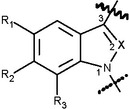 |
X = CH, C-CH3, C-F, C-Cl, C-Br, C-I oder N |
| b) | 4-, 5-, 6- oder 7-Azaindol-1,3-diyl (X = CH, C-CH3, C-F, C-Cl, C-Br und C-I) und 4-, 5-, 6- oder 7-Azaindazol-1,3-diyl (X = N)
(Bindungsort für die Brücke in Position 3, Bindungsort für die Seitenkette in Position 1) |
| | 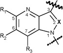 | 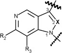 | jeweils:
X = CH, C-CH3, C-F, C-Cl, C-Br, C-I oder N |
| | 4-Aza-Derivate | 5-Aza-Derivate |
| | 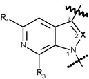 | 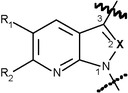 |
| | 6-Aza-Derivate | 7-Aza-Derivate |
| c) | 1H-Indol-2-on-1,3-diyl | 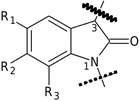 |
| d) | Carbazol-1,4-diyl
(Bindungsort für die Brücke in Position 4,
Bindungsort für die Seitenkette in Position 1) |
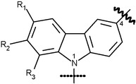 |
| e) | Benzimidazol-1,2-diyl-Isomer I
(Bindungsort für die Brücke in Position 2,
Bindungsort für die Seitenkette in Position 1) | 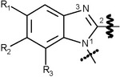 |
| f) | Benzimidazol-1,2-diyl-Isomer II
(Bindungsort für die Brücke in Position 1,
Bindungsort für die Seitenkette in Position 2) | 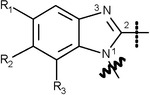 |
| g) | Pyrazol-1,5-diyl
(Bindungsort für die Brücke in Position 5,
Bindungsort für die Seitenkette in Position 1) | 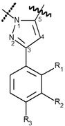 | 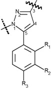 |
| | und |
| | Pyrazol-1,3-diyl
(Bindungsort für die Brücke in Position 3,
Bindungsort für die Seitenkette in Position 1) |
| | | Pyrazol-1,5-diyl | Pyrazol-1,3-diyl |
| h) | 4-Chinolon-1,3-diyl
(Bindungsort für die Brücke in Position 3,
Bindungsort für die Seitenkette in Position 1) | 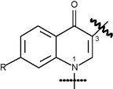 |
- 2.1.2
Brücke an der Kernstruktur
Die Brücke an der Kernstruktur schließt die folgenden Strukturelemente ein, die jeweils an der unter Nummer 2.1.1 bezeichneten Stelle an die Kernstruktur gebunden sind:
- a)
Carbonyl-, Methylencarbonyl- (CH2-Gruppe an Kernstruktur geknüpft) und Azacarbonylgruppe,
- b)
Carboxamidogruppe (Carbonylgruppe an Kernstruktur geknüpft) unter Einschluss von kohlenstoff- und wasserstoffhaltigen Substituenten am Amidstickstoff, die mit Position 2 der Indolkernstruktur (Nummer 2.1.1 Buchstabe a: X = CH) einen Sechsring bilden, und Methylencarboxamidogruppe (CH2-Gruppe an Kernstruktur geknüpft),
- c)
Carboxyl- (Carbonylgruppe an Kernstruktur geknüpft) und Methylencarboxylgruppe (CH2-Gruppe an Kernstruktur geknüpft),
- d)
direkt an die Kernstruktur angebundene Stickstoffheterocyclen, die auch weitere Stickstoff-, Sauerstoff- oder Schwefelatome enthalten können, mit einer Ringgröße von bis zu fünf Atomen sowie einer Doppelbindung zum Stickstoffatom an der Anknüpfungsstelle,
- e)
Hydrazongruppe mit Doppelbindung vom Stickstoff zu Position 3 der Kernstruktur zu Nummer 2.1.1 Buchstabe c.
- 2.1.3
Brückenrest- a)
Der Brückenrest kann Kombinationen der Atome Kohlenstoff, Wasserstoff, Stickstoff, Sauerstoff, Schwefel, Fluor, Chlor, Brom und Iod enthalten, die eine maximale Molekülmasse von 400 u haben und folgende Strukturelemente beinhalten können:
- aa)
beliebig substituierte gesättigte, ungesättigte oder aromatische Ringstrukturen einschließlich Polyzyklen und Heterozyklen, wobei eine Anbindung an die Brücke auch über einen Substituenten möglich ist,
- bb)
beliebig substituierte Kettenstrukturen mit mindestens einem Kohlenstoffatom, die unter Einbeziehung der Heteroatome eine durchgehende Kettenlänge von maximal zwölf Atomen (ohne Mitzählung von Wasserstoffatomen) aufweisen.
- b)
Brücken mit der Möglichkeit der Anbindung von mehreren Brückenresten, beispielsweise Brücken zu Nummer 2.1.2 Buchstabe b, d oder Buchstabe e, können auch mehrere Brückenreste gemäß den Definitionen zu Nummer 2.1.3 Buchstabe a Doppelbuchstabe aa und zu Nummer 2.1.3 Buchstabe a Doppelbuchstabe bb tragen. Die Molekülmassenbeschränkung von insgesamt 400 u gilt dann für die Summe der Brückenreste.
- 2.1.4
Seitenkette
Die Seitenkette kann beliebige Kombinationen der Atome Kohlenstoff, Wasserstoff, Stickstoff, Sauerstoff, Schwefel, Silizium, Fluor, Chlor, Brom und Iod aufweisen, soweit sie nicht gemäß den Buchstaben a und b eingeschränkt werden. Die Seitenkette darf eine maximale Molekülmasse von 300 u aufweisen und muss jeweils an der unter Nummer 2.1.1 bezeichneten Stelle der Kernstruktur angebunden sein. Die Seitenkette kann folgende Strukturelemente aufweisen:
- a)
beliebig substituierte Kettenstrukturen mit mindestens einem Kohlenstoffatom, die innerhalb der Kette neben weiteren Kohlenstoffatomen ausschließlich auch Sauerstoff, Schwefel- und Siliziumatome aufweisen können und unter Einbeziehung der Heteroatome eine durchgehende Kettenlänge von drei bis maximal zehn Atomen (ohne Mitzählung von Wasserstoffatomen) aufweisen,
- b)
direkt angebundene oder über eine Kohlenwasserstoffbrücke (gesättigt oder einfach ungesättigt, verzweigt oder nicht verzweigt, in Position 2 optional oxo-substituiert) mit insgesamt ein bis vier Kohlenstoffatomen gekoppelte, beliebig substituierte gesättigte, ungesättigte oder aromatische Ringstrukturen mit drei bis sieben Ringatomen einschließlich Polyzyklen und Heterozyklen. Bei den Polyzyklen darf jeder Ring drei bis sieben Ringatome aufweisen. Heterozyklen dürfen neben Kohlenstoff die Atome Sauerstoff, Stickstoff und Schwefel im Ring aufweisen. Eine mögliche freie Valenz eines Stickstoffatoms im Ring kann ein Wasserstoffatom oder einen Methyl- oder Ethylrest tragen.
- 2.2
Von 3-Sulfonylamidobenzoesäure abgeleitete Verbindungen
Zu dieser eigenständigen Gruppe der Cannabimimetika/synthetischen Cannabinoide, die nicht nach dem unter Nummer 2.1 beschriebenen modularen Aufbau zusammengesetzt ist, gehören die Stoffe, die eine der beiden unter Nummer 2.2.1 beschriebenen Kernstrukturen besitzen, mit den unter Nummer 2.2.2 beschriebenen Substituenten besetzt sein können und eine maximale Molekülmasse von 500 u haben.
- 2.2.1
Kernstruktur
Die Kernstruktur schließt die nachfolgend in den Buchstaben a und b beschriebenen Moleküle ein. Diese können an den in den nachfolgenden Abbildungen gekennzeichneten Positionen mit den unter Nummer 2.2.2 genannten Atomen und Atomgruppen (Reste R
1 bis R
4) substituiert sein:
| a) | 3-Sulfonylamidobenzoate | ![Strukturformel eines Moleküls: Ein Sechseck, an drei Seiten mit Doppelstrichen (Kernstruktur). Dort ein offenes Ende R1. Eine Seitenkette unten mit S, einem Strich zu N von dem aus jeweils ein Strich schräg links unten zu R3 und ein Strich schräg rechts unten zu R4 geht; zwei Doppelstriche von S aus nach rechts und links jeweils einem O (Brückenstruktur). Eine weitere Seitenkette oben rechts geht über eine Brückenstruktur mit einem Eckpunkt zu O und weiter mit einem Strich zu R2. Von dem Eckpunkt geht auch ein Doppelstrich zu O.](../normengrafiken/bgbl1_2024/j02100_0340.jpg) |
| b) | 3-Sulfonylamidobenzamide | ![Strukturformel eines Moleküls: Ein Sechseck, an drei Seiten mit Doppelstrichen (Kernstruktur). Eine Seitenkette unten mit S, einem Strich zu N von dem aus jeweils ein Strich schräg links unten zu R3 und ein Strich schräg rechts unten zu R4 geht; zwei Doppelstriche von S aus nach rechts und links jeweils einem O (Brückenstruktur). Eine weitere Seitenkette oben rechts geht über eine Brückenstruktur mit einem Eckpunkt zu N und weiter mit einem Strich zu R2. Vom N geht ein Strich auch zu H. Von dem Eckpunkt geht auch ein Doppelstrich zu O.](../normengrafiken/bgbl1_2024/j02100_0350.jpg) |
- 2.2.2
Reste R1, R2, R3und R4- a)
Der Rest R1 kann aus einem der folgenden Atome oder einer der folgenden Atomgruppen bestehen: Wasserstoff, Fluor, Chlor, Brom, Iod, Methyl-, Ethyl- und Methoxygruppe.
- b)
Der Rest R2 kann aus einem der folgenden Ringsysteme bestehen: Phenyl-, Pyridyl-, Cumyl-,8-Chinolinyl-, 3-Isochinolinyl-, 1-Naphthyl- und Adamantylrest. Diese Ringsysteme können weiterhin mit beliebigen Kombinationen der folgenden Atome oder Atomgruppen substituiert sein: Wasserstoff, Fluor, Chlor, Brom, Iod, Methoxy-, Amino-, Hydroxy-, Cyano-, Methyl- und Phenoxygruppen.
- c)
Die Reste R3 und R4 können aus Wasserstoffatomen, Methyl-, Ethyl-, Propyl- und Isopropylgruppen in beliebiger Kombination bestehen. Die Reste R3 und R4 können auch ein gesättigtes Ringsystem bis zu einer Größe von sieben Atomen einschließlich des Stickstoffatoms bilden. Dieses Ringsystem kann die weiteren Elemente Stickstoff, Sauerstoff und Schwefel enthalten und eine beliebige Kombination der Elemente Wasserstoff, Fluor, Chlor, Brom und Iod tragen. Für die Substitution des Stickstoffatoms in einem solchen Ring gelten die für die Reste R3 und R4 in Satz 1 von Buchstabe c angegebenen Substitutionsmöglichkeiten.
- 2.3
Von 6H-Benzo(c)chromen-1-ol (6H-Dibenzo(b,d)pyran-1-ol) abgeleitete Verbindungen
Zu dieser eigenständigen Gruppe der Cannabimimetika/synthetischen Cannabinoide, die nicht nach dem unter den Nummern 2.1 und 2.2 beschriebenen modularen Aufbau zusammengesetzt sind, gehören die Stoffe, die eine unter Nummer 2.3.1 beschriebene Kernstruktur besitzen, mit den unter Nummer 2.3.2 beschriebenen Substituenten besetzt sein können und eine maximale Molekülmasse von 600 u haben.
- 2.3.1
Kernstruktur
Die Kernstruktur schließt folgende von 6
H-Benzo(c)chromen-1-ol (6
H-Dibenzo(b,d)pyran-1-ol) abgeleiteten Verbindungen ein unabhängig vom Hydrierungsgrad des aromatischen Ringes A und der Position der dabei gegebenenfalls darin verbleibenden Doppelbindungen. Die Verbindungen können an den gekennzeichneten Positionen mit den unter Nummer 2.3.2 genannten Atomen und Atomgruppen (Reste R
1 bis R
5) substituiert sein:
- 2.3.2
Reste R1, R2, R3, R4 und R5- a)
Der Rest R1 kann aus Wasserstoff oder einer der folgenden Atomgruppen bestehen: Hydroxymethylgruppe, Methylgruppe sowie Kohlenwasserstoffkette (gesättigt oder ungesättigt, verzweigt oder nicht verzweigt, bis C10). Die vorgenannten Atomgruppen können mit folgenden Atomen substituiert sein: Wasserstoff, Fluor, Chlor, Brom und Iod.
- b)
Die Reste R2 und R3 können aus Wasserstoff oder den folgenden Atomgruppen bestehen: Methylgruppen und Alkylketten (verzweigt oder nicht verzweigt, bis C5). Die vorgenannten Atomgruppen können mit folgenden Atomen substituiert sein: Wasserstoff, Fluor, Chlor, Brom und Iod.
- c)
Der Rest R4 kann aus Wasserstoff oder einer der folgenden Atomgruppen bestehen: Methylgruppe sowie Kohlenwasserstoffkette (gesättigt oder ungesättigt, verzweigt oder nicht verzweigt, bis C12). Die vorgenannten Atomgruppen können mit folgenden Atomen substituiert sein: Wasserstoff, Fluor, Chlor, Brom und Iod.
- d)
Der Rest R5 kann aus Wasserstoff oder einer der folgenden Atomgruppen bestehen: Alkylcarbonyl (verzweigt oder nicht verzweigt, Alkylrest bis C7), Cycloalkylmethylcarbonyl mit drei bis sieben Ringatomen einschließlich Polyzyklen, Arylcarbonyl mit drei bis sechs Ringatomen einschließlich Polyzyklen und Heterozyklen, Arylmethylcarbonyl mit drei bis sechs Ringatomen einschließlich Polyzyklen und Heterozyklen. Bei den Polyzyklen darf jeder Ring jeweils drei bis sieben Ringatome aufweisen. Heterozyklen dürfen neben Kohlenstoff die Atome Sauerstoff, Stickstoff und Schwefel im Ring aufweisen. Eine mögliche freie Valenz eines Stickstoffatoms im Ring kann ein Wasserstoffatom oder einen Methyl- oder Ethylrest tragen.
- 3.
Benzodiazepine
Die Gruppe der Benzodiazepine umfasst 1,4- und 1,5-Benzodiazepine und ihre Triazolo- und Imidazolo-Derivate (Nummer 3.1 Buchstabe a und b) sowie einige speziell substituierte Untergruppen dieser Benzodiazepine (Nummer 3.1 Buchstabe c bis f). Die maximale Molekülmasse beträgt jeweils 600 u.
- 3.1
Kernstruktur
Die Kernstruktur schließt die nachfolgend in den Buchstaben a bis f beschriebenen Ringsysteme ein. Diese Ringsysteme können an den in den nachfolgenden Abbildungen gekennzeichneten Positionen mit den unter Nummer 3.2 genannten Atomen oder Atomgruppen (Reste R
1 bis R
7 und X) substituiert sein:
- a)
- b)
- c)
- d)
- e)
Oxazolam-Abkömmlinge
| 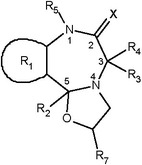 | ![Strukturformel eines Moleküls: Kernstruktur: Ein Siebeneck. Eckpunkte 1 und 4 mit N. Weitere Eckpunkte 2, 3 und 5. Abzweigend vom Siebeneck: R4 und R3 von Eckpunkt 3, R2 von Eckpunkt 5. Fünfeck unten an Kernstruktur anliegend mit gemeinsamem N-Eckpunkt, dem Eckpunkt 4 mit N und O-Eckpunkt. Im Fünfeck, benachbart zum O-Eckpunkt, abzweigend R7. Fünfeck oben an Kernstruktur anliegend mit zwei Doppelstrichen und drei N-Eckpunkten, einer davon gemeinsam mit Siebeneck, dort Eckpunkt 1 mit N. In Fünfeck R5 abzweigend benachbart zu Eckpunkt 1 mit N. An Linksseite des Siebenecks angrenzend ein Kreis/Oval mit R1 im Zentrum.](../normengrafiken/bgbl1_2024/j02100_0480.jpg) | ![Strukturformel eines Moleküls: Kernstruktur: Ein Siebeneck. Eckpunkte 1 und 4 mit N. Weitere Eckpunkte 2, 3 und 5. Abzweigend vom Siebeneck: R4 und R3 von Eckpunkt 3, R2 von Eckpunkt 5. Fünfeck unten an Kernstruktur anliegend mit gemeinsamem N-Eckpunkt, dem Eckpunkt 4 mit N und O-Eckpunkt. Im Fünfeck, benachbart zum O-Eckpunkt, abzweigend R7. Fünfeck oben an Kernstruktur anliegend mit zwei Doppelstrichen und zwei N-Eckpunkten, einer davon gemeinsam mit Siebeneck, dort Eckpunkt 1 mit N. In Fünfeck R5 abzweigend benachbart zu Eckpunkt 1 mit N. An Linksseite des Siebenecks angrenzend ein Kreis/Oval mit R1 im Zentrum.](../normengrafiken/bgbl1_2024/j02100_0490.jpg) |
- f)
Chlordiazepoxid-Abkömmlinge
| 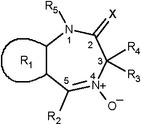 | ![Strukturformel eines Moleküls: Kernstruktur: Ein Siebeneck. Eckpunkte 1 mit N. Eckpunkt 4 mit N+. Weitere Eckpunkte 2, 3, und 5. Abzweigend vom Siebeneck: R4 und R3 von Eckpunkt 3, O- von Eckpunkt 4 mit N+, R2 von Eckpunkt 5. Fünfeck oben an Kernstruktur anliegend mit zwei Doppelstrichen und drei N-Eckpunkten, einer davon gemeinsam mit Siebeneck, dort Eckpunkt 1 mit N. In Fünfeck benachbart zum gemeinsamen N-Eckpunkt R5 abzweigend. An Linksseite des Sechsecks angrenzend ein Kreis/Oval mit R1 im Zentrum.](../normengrafiken/bgbl1_2024/j02100_0510.jpg) | ![Strukturformel eines Moleküls: Kernstruktur: Ein Siebeneck. Eckpunkte 1 mit N. Eckpunkt 4 mit N+. Weitere Eckpunkte 2, 3, und 5. Abzweigend vom Siebeneck: R4 und R3 von Eckpunkt 3, O- von Eckpunkt 4 mit N+, R2 von Eckpunkt 5. Fünfeck oben an Kernstruktur anliegend mit zwei Doppelstrichen und zwei N-Eckpunkten, einer davon gemeinsam mit Siebeneck, dort Eckpunkt 1 mit N. In Fünfeck benachbart zum gemeinsamen N-Eckpunkt R5 abzweigend. An Linksseite des Sechsecks angrenzend ein Kreis/Oval mit R1 im Zentrum.](../normengrafiken/bgbl1_2024/j02100_0520.jpg) |
- 3.2
Reste R1bis R7und X- a)
Der Rest R1 schließt eines der folgenden an die Siebenringe der Kernstrukturen anellierten Ringsysteme ein:
Phenyl-, Thienyl-, 4,5,6,7-Tetrahydrobenzo[b]thienyl-, Furanyl- und Pyridylring; die Heteroatome im Thienyl-, Furanyl- und Pyridylring können an jeder beliebigen Position außerhalb des Siebenringes der Kernstruktur stehen.
Der Rest R1 kann weiterhin mit einem oder mehreren der folgenden Atome oder Atomgruppen in beliebiger Kombination und an beliebigen Positionen außerhalb des Siebenringes substituiert sein: Wasserstoff, Fluor, Chlor, Brom, Iod, Methyl-, Ethyl-, Nitro- und Aminogruppen.
- b)
Der Rest R2 schließt eines der folgenden Ringsysteme ein:
Phenyl-, Pyridyl- (mit Stickstoffatom an beliebiger Position im Pyridylring) und Cyclohexenylring (mit Doppelbindung an beliebiger Position im Cyclohexenylring).
Phenyl- und Pyridylring können einen oder mehrere der folgenden Substituenten in beliebiger Kombination und an beliebiger Position tragen: Wasserstoff, Fluor, Chlor, Brom, Iod, Methyl-, Ethyl-, Nitro- und Aminogruppen.
- c)
Der Rest R3 kann aus Wasserstoff oder einer der folgenden Atomgruppen bestehen:
Hydroxy-, Carboxyl-, Ethoxycarbonyl-, (N,N-Dimethyl)carbamoyl-, Succinyloxy- und Methylgruppe.
- d)
Der Rest R4 kann aus Wasserstoff oder einer der folgenden Atomgruppen bestehen:
Methyl- und Ethylgruppe.
- e)
Die Reste R3 und R4 können auch gemeinsam eine Carbonylgruppe (C=O) bilden.
- f)
Der Rest R5 kann aus Wasserstoff oder einer der folgenden Atomgruppen bestehen:
Methyl-, Ethyl-, (N,N-Dimethylamino)methyl-, (N,N-Diethylamino)methyl-, (N,N-Dimethylamino)ethyl-,(N,N-Diethylamino)ethyl-, (Cyclopropyl)methyl-, (Trifluormethyl)methyl-, Hydrazidomethyl- und Prop-2-in-1-ylgruppe.
- g)
Der Rest R6 kann aus Wasserstoff oder einer der folgenden Atomgruppen bestehen:
Hydroxy- und Methylgruppe.
- h)
Der Rest R7 kann aus Wasserstoff oder einer der folgenden Atomgruppen bestehen:
Methyl- und Ethylgruppe.
- i)
Die Reste R6 und R7 können bei den 1,5-Benzodiazepinen auch gemeinsam eine Carbonylgruppe (C=O) bilden.
- j)
Bei den 1,5-Benzodiazepinen kann statt R2 und R7 auch eine mit R6 substituierte Doppelbindung zum 5-Stickstoff-Atom vorliegen.
- k)
Der Rest X schließt eines der folgenden Atome oder eine der folgenden Atomgruppen ein:
Sauerstoff, Schwefel, Imino- und N-Methyliminogruppe. Wenn R3, R4 oder R5 aus Wasserstoff besteht, können als tautomere Formen auch die entsprechenden Enole, Thioenole oder Enamine vorliegen.
- 4.
Von N-(2-Aminocyclohexyl)amid abgeleitete Verbindungen
Eine von N-(2-Aminocyclohexyl)amid abgeleitete Verbindung ist jede chemische Verbindung, die von der nachfolgend abgebildeten Grundstruktur abgeleitet werden kann, eine maximale Molekülmasse von 500 u hat und mit den nachfolgend beschriebenen Substituenten besetzt sein kann.
Die Grundstruktur N-(2-Aminocyclohexyl)amid kann an den in der Abbildung gekennzeichneten Positionen mit einer beliebigen Kombination der folgenden Atome, verzweigten oder nicht verzweigten Atomgruppen oder Ringsystemen (Reste R
1 bis R
6) substituiert sein:
- a)
R1 und R2:
Wasserstoff und Alkylgruppe (bis C7).
Ferner sind Stoffe eingeschlossen, bei denen das Stickstoffatom Bestandteil eines cyclischen Systems ist (z. B. Pyrrolidinyl-).
Der Rest R1 oder R2 kann auch an die Bindungsstelle der NR1R2-Gruppe am Sechsring anknüpfen (unter Bildung einer sogenannten Spiroverbindung). Diese stickstoffhaltigen Ringe dürfen eine Ringgröße von drei bis sieben Atomen aufweisen (ein Stickstoffatom und zwei bis sechs Kohlenstoffatome).
- b)
R3:
Wasserstoff und Oxaspirogruppe (Ringgröße von drei bis acht Atomen einschließlich des Sauerstoffatoms).
- c)
R4:
Wasserstoff und Alkylgruppe (bis C5).
- d)
R5 und R6:
Der Phenylring kann an den Positionen 2, 3, 4, 5 und 6 beliebige Kombinationen folgender Substituenten enthalten: Wasserstoff, Brom, Chlor, Fluor, Iod und Trifluormethylgruppe.
Ferner sind Stoffe eingeschlossen, bei denen R5 und R6 gemeinsam an benachbarten C-Atomen ein Ringsystem (bis C6) unter Einbeziehung von Heteroatomen (Sauerstoff, Schwefel, Stickstoff) bilden. Im Fall eines Stickstoffs in diesem Ringsystem darf dieser die Substituenten Wasserstoff und Methylgruppe tragen.
Die Anzahl (n) der Methylengruppen (CH2)n zwischen dem Phenylring und der Carbonylgruppe in der Kernstruktur kann null oder eins betragen.
- 5.
Von Tryptamin abgeleitete Verbindungen
- 5.1
Indol-3-alkylamine
Eine von Indol-3-alkylamin abgeleitete Verbindung ist jede chemische Verbindung, die von der nachfolgend abgebildeten Grundstruktur abgeleitet werden kann, eine maximale Molekülmasse von 500 u hat und mit den nachfolgend beschriebenen Substituenten besetzt sein kann. Ausgenommen hiervon sind Tryptamin, die natürlich vorkommenden Neurotransmitter Serotonin und Melatonin sowie deren aktive Metaboliten (z. B.: 6-Hydroxymelatonin).
Die Grundstruktur Indol-3-alkylamin kann an den in der Abbildung gekennzeichneten Positionen mit den folgenden Atomen, verzweigten oder nicht verzweigten Atomgruppen oder Ringsystemen (Reste R
1 bis R
5 und R
n) substituiert sein:
- a)
R1 und R2:
Wasserstoff, Alkyl- (bis C6), Cycloalkyl- (Ringgröße bis C6), Cycloalkylmethyl- (Ringgröße bis C6) und Allylgruppen.
Ferner sind Stoffe eingeschlossen, bei denen das Stickstoffatom Bestandteil eines Pyrrolidinyl-Ringsystems ist.
- b)
R3:
Wasserstoff und Alkylgruppe (bis C3).
- c)
R4:
Wasserstoff und Alkylgruppe (bis C2).
- d)
R5:
Wasserstoff, Alkyl- (bis C3), Alkylcarbonyl- (bis C10), Cycloalkylcarbonyl- (Ringgröße C3 bis C6), Cycloalkylmethylcarbonyl- (Ringgröße C3 bis C6), Cycloalkylethylcarbonyl- (Ringgröße C3 bis C6), Cycloalkylpropylcarbonyl- (Ringgröße C3 bis C6) und Benzylcarbonylgruppe.
- e)
Rn:
Das Indolringsystem kann an den Positionen 4, 5, 6 und 7 mit folgenden Atomen oder Atomgruppen substituiert sein: Wasserstoff, Fluor, Chlor, Brom, Iod, Alkyl- (bis C4), Alkyloxy- (bis C10), Benzyloxy-, Carboxamido-, Methoxy-, Acetoxy-, Hydroxy- und Methylthiogruppen, an Position 4 darüber hinaus mit Dihydrogenphosphat.
Ferner sind Stoffe eingeschlossen, bei denen durch Rn zwei benachbarte Kohlenstoffatome der Positionen 4, 5, 6 und 7 mit einer Methylendioxygruppe überbrückt werden.
- 5.2
Δ9,10-Ergolene
Eine von Δ
9,10-Ergolen abgeleitete Verbindung ist jede chemische Verbindung, die von der nachfolgend abgebildeten Grundstruktur abgeleitet werden kann, eine maximale Molekülmasse von 600 u hat und mit den nachfolgend beschriebenen Substituenten besetzt sein kann.
Die Grundstruktur Δ
9,10-Ergolen kann an den in der Abbildung gekennzeichneten Positionen mit den folgenden Atomen, verzweigten oder nicht verzweigten Atomgruppen oder Ringsystemen (Reste R
1 bis R
4) substituiert sein:
- a)
R1:
Der Rest R
1 kann aus beliebigen Kombinationen der Atome Kohlenstoff, Wasserstoff, Stickstoff, Sauerstoff, Schwefel, Fluor, Chlor, Brom und Iod bestehen, soweit sie nicht gemäß den Doppelbuchstaben aa und bb eingeschränkt werden. Der Rest R
1 darf eine maximale Molekülmasse von 300 u und folgende Strukturelemente aufweisen:
- aa)
Wasserstoff oder beliebig substituierte Kettenstrukturen mit mindestens einem Kohlenstoffatom, die innerhalb der Kette neben weiteren Kohlenstoffatomen ausschließlich auch Sauerstoff- und Schwefelatome aufweisen können,
- bb)
direkt angebundene oder über eine Kohlenwasserstoffbrücke (gesättigt oder einfach ungesättigt, verzweigt oder nicht verzweigt mit insgesamt ein bis fünf Kohlenstoffatomen) oder eine Carbonylgruppe oder eine Alkylcarbonylgruppe (Alkylrest bis C4, Bindung der Carbonylgruppe an den Stickstoff des Ergolens) oder eine Alkyloxycarbonylgruppe (Alkylrest bis C4, Bindung der Carbonylgruppe an den Stickstoff des Ergolens) oder eine Sulfonylgruppe gekoppelte, beliebig substituierte gesättigte, ungesättigte oder aromatische Ringstrukturen mit drei bis sieben Ringatomen einschließlich Polyzyklen und Heterozyklen. Bei den Polyzyklen darf jeder Ring drei bis sieben Ringatome aufweisen. Heterozyklen dürfen neben Kohlenstoff die Atome Sauerstoff, Stickstoff und Schwefel im Ring aufweisen. Eine mögliche freie Valenz eines Stickstoffatoms im Ring kann ein Wasserstoffatom oder einen Methyl- oder Ethylrest tragen.
- b)
R2:
Wasserstoff, Alkyl- (bis C4), Allyl- und Prop-2-in-1-yl-Gruppe.
- c)
R3 und R4:
Wasserstoff, Alkyl- (bis C5), Cyclopropyl-, 1-Hydroxyalkyl- (bis C2) und Allylgruppen.
Ferner sind Stoffe eingeschlossen, bei denen das Amid-Stickstoffatom Bestandteil eines Morpholino-, Pyrrolidino- oder Dimethylazetidid-Ringsystems ist.
- 6.
Von Arylcyclohexylamin abgeleitete Verbindungen
Eine von Arylcyclohexylamin abgeleitete Verbindung ist jede chemische Verbindung, die von der nachfolgend abgebildeten Grundstruktur abgeleitet werden kann, eine maximale Molekülmasse von 500 u hat und mit den nachfolgend beschriebenen Substituenten besetzt sein kann.
Die Grundstruktur Arylcyclohexylamin kann an den in der Abbildung gekennzeichneten Positionen mit den folgenden Atomen, verzweigten oder nicht verzweigten Atomgruppen oder Ringsystemen (Reste R
1 bis R
3 und R
n) substituiert sein:
- a)
R1/R2:
Wasserstoff, Alkyl- (bis C6), Cycloalkyl- (Ringgröße bis C6), Alkenyl- (bis C6) und Alkinylgruppen (bis C6).
Die aufgeführten Atomgruppen können weiterhin mit beliebigen chemisch möglichen Kombinationen der Elemente Kohlenstoff, Wasserstoff, Stickstoff und Sauerstoff substituiert sein. Die auf diese Weise entstehenden Substituenten R1/R2 dürfen dabei eine durchgehende Kettenlänge von maximal neun Atomen (ohne Mitzählung von Wasserstoffatomen) aufweisen. Atome von Ringstrukturen werden dabei nicht in die Zählung einbezogen.
Zudem gehören Stoffe dazu, bei denen das Stickstoffatom Bestandteil eines cyclischen Systems ist (beispielsweise Pyrrolyl-, Pyrrolidinyl-, Piperidinyl-, Morpholino-Reste). Diese Ringsysteme dürfen im Ring die Elemente Kohlenstoff, Sauerstoff, Schwefel und Stickstoff aufweisen und eine Ringgröße bis zu sieben Atomen aufweisen. Die Ringsysteme können an jeder Position mit folgenden Atomen oder Atomgruppen substituiert sein: Wasserstoff, Fluor, Chlor, Brom, Iod, Hydroxy-, Alkyl- (bis C6) und Phenylgruppen.
- b)
R3:
Alkyl- (bis C6), Alkinylgruppe (bis C6) oder eines der folgenden Ringsysteme: Phenyl-,Pyrrolyl-, Pyridyl-, Thienyl-, Furanyl-, Methylendioxyphenyl-, Ethylendioxyphenyl-, Dihydrobenzofuranyl- und Benzothiophenyl-Reste.
Die Ringsysteme können an jeder chemisch möglichen Position als R3 an die Kernstruktur angebunden sein und an beliebiger Position mit folgenden Atomen oder Atomgruppen substituiert sein: Wasserstoff, Fluor, Chlor, Brom, Iod, Hydroxy-, Thiol-, Alkyl- (bis C6), Alkoxy- (bis C6), Alkylsulfanyl- (bis C6) und Aminogruppen, einschließlich der chemischen Verbindungen, bei denen Substitutionen oder eine direkte Anbindung zu einem Ringschluss mit dem Cyclohexylring führen. Diese Ringsysteme dürfen eine Ringgröße von vier bis sechs Atomen aufweisen.
- c)
Rn:
Das Cyclohexylringsystem kann an den Positionen zwei bis sechs mit folgenden Atomen oder Atomgruppen substituiert sein: Wasserstoff, Alkyl- (bis C6), Alkoxy- (bis C6), Hydroxy-, Phenylalkylgruppen (in der Alkylkette C1 bis C4) und Oxo-Gruppen (=O, doppelt gebundenes Sauerstoffatom am Ring).
- 7.
Von Benzimidazol abgeleitete Verbindungen
Eine von Benzimidazol abgeleitete Verbindung ist jede chemische Verbindung, die von der nachfolgend abgebildeten Grundstruktur abgeleitet werden kann, eine maximale Molekülmasse von 500 u hat und mit den nachfolgend beschriebenen Substituenten besetzt sein kann:
Die Grundstruktur kann an den in der Abbildung gekennzeichneten Positionen mit den folgenden Atomen, verzweigten oder nicht verzweigten Atomgruppen oder Ringsystemen (Reste R
1 bis R
4 und R
n) substituiert sein:
- a)
R1 und R2:
Wasserstoff, Alkylgruppen (bis C3).
Ferner sind Stoffe eingeschlossen, bei denen das Amin-Stickstoffatom Bestandteil eines Morpholino-, Pyrrolidino- oder Piperidinyl-Ringsystems ist.
- b)
R3 und R4:
Wasserstoff, Nitro-, Trifluormethyl-, Methoxy-, Trifluormethoxy-, Cyanogruppen, Fluor, Chlor, Brom und Iod.
- c)
Rn:
Der Phenylring kann an den Positionen zwei bis sechs mit folgenden Atomen oder Atomgruppen substituiert sein: Wasserstoff, Alkyl- (bis C6), Alkoxy- (bis C5), Trifluormethoxy-, Acetoxy-, Alkylsulfanyl- (bis C5), Trifluormethyl-, Hydroxy-, Cyanogruppen, Fluor, Chlor, Brom und Iod.

![Strukturformel eines Moleküls: Kernstruktur: Ein Siebeneck. Eckpunkte 1 und 4 mit N. Weitere Eckpunkte 2, 3 und 5. Abzweigend vom Siebeneck: R4 und R3 von Eckpunkt 3, R2 von Eckpunkt 5. Fünfeck oben an Kernstruktur anliegend mit einem Doppelstrich und zwei N-Eckpunkten von denen einer Eckpunkt 1 mit N des Siebenecks ist. Vom Fünfeck auch X abzweigend über Doppelstrich benachbart zu Eckpunkt 1 mit N vom Siebeneck. Seitenkette über Doppelstrich am Fünfeck (oben rechts) zu Sechseck als Kernstruktur mit N als Eckpunkt. Dieses Sechseck hat zwei gegenüberliegende Eckpunkte N von denen das andere über einen Strich zu CH3 führt. An Linksseite des Siebenecks angrenzend ein Kreis/Oval mit R1 im Zentrum.](../normengrafiken/bgbl1_2024/j02100_0430.jpg)
![Strukturformel eines Moleküls: Kernstruktur: Ein Siebeneck. Eckpunkte 1 und 4 mit N. Weitere Eckpunkte 2, 3, und 5. Abzweigend vom Siebeneck: R5 von Eckpunkt 1 mit N, X über Doppelstrich von Eckpunkt 2, R4 und R3 von Eckpunkt 3, R2 von Eckpunkt 5. Sechseck unten an Kernstruktur anliegend mit einem Doppelstrich, einem gemeinsamen N-Eckpunkt und einem O-Eckpunkt. Dort gegenüber über Doppelstrich abzweigend O sowie benachbart vom O-Eckpunkt R7 abzweigend. An Linksseite des Siebenecks angrenzend ein Kreis/Oval mit R1 im Zentrum.](../normengrafiken/bgbl1_2024/j02100_0440.jpg)
![Strukturformel eines Moleküls: Kernstruktur: Ein Siebeneck. Eckpunkte 1 und 4 mit N. Weitere Eckpunkte 2, 3 und 5. Abzweigend vom Siebeneck: R4 und R3 von Eckpunkt 3, R2 von Eckpunkt 5. Sechseck unten an Kernstruktur anliegend mit einem Doppelstrich, einem gemeinsamen N-Eckpunkt dem Eckpunkt 4 mit N und O-Eckpunkt. Dort abzweigend O über Doppelstrich gegenüber vom O-Eckpunkt sowie R7 benachbart zum O-Eckpunkt. Fünfeck oben an Kernstruktur anliegend mit zwei Doppelstrichen und drei N-Eckpunkten, einer davon gemeinsam mit Siebeneck dort Eckpunkt 1 mit N. In Fünfeck R5 abzweigend benachbart zu Eckpunkt 1 mit N. An Linksseite des Siebenecks angrenzend ein Kreis/Oval mit R1 im Zentrum.](../normengrafiken/bgbl1_2024/j02100_0450.jpg)
![Strukturformel eines Moleküls: Kernstruktur: Ein Siebeneck. Eckpunkte 1 und 4 mit N. Weitere Eckpunkte 2, 3 und 5. Abzweigend vom Siebeneck: R4 und R3 von Eckpunkt 3, R2 von Eckpunkt 5. Sechseck unten an Kernstruktur anliegend mit einem Doppelstrich, einem gemeinsamen N-Eckpunkt, dem Eckpunkt 4 mit N und O-Eckpunkt. Dort abzweigend O über Doppelstrich gegenüber vom O-Eckpunkt sowie R7 benachbart zum O-Eckpunkt. Fünfeck oben an Kernstruktur anliegend mit zwei Doppelstrichen und zwei N-Eckpunkten, einer davon gemeinsam mit Siebeneck dort Eckpunkt 1 mit N. In Fünfeck R5 abzweigend benachbart zu Eckpunkt 1 mit N. An Linksseite des Siebenecks angrenzend ein Kreis/Oval mit R1 im Zentrum.](../normengrafiken/bgbl1_2024/j02100_0460.jpg)
![Strukturformel eines Moleküls: Kernstruktur: Ein Sechseck mit drei Doppelstrichen. Vom Zentrum ausgehend zwei Enden R5 und R6. Rechts fortsetzend Seitenkette: über Brückenstruktur mit drei Eckpunkten: erster Eckpunkt (CH2)n verbunden mit einem Eckpunkt mit Doppelstrich zum O. Brücke fortsetzend mit N als dritten Eckpunkt und von dort abzweigend R4 und weiteres Sechseck. Abzweigend vom Sechseck: R3 gegenüber der Brücke und N benachbart zur Brücke. Von N aus jeweils ein Strich schräg links unten zu R1 und ein Strich schräg rechts unten zu R2.](../normengrafiken/bgbl1_2024/j02100_0530.jpg)
![Strukturformel eines Moleküls: Kernstruktur: Drei Sechsecke mit Fünfeck. Unten ein Sechseck mit drei Doppelstrichen. Angrenzend rechts: Fünfeck mit einem Doppelstrich, von dessen Eckpunkt N abzweigend R1. Oberhalb, zwischen Sechseck und Fünfeck, weiteres Sechseck. Linksseitig oberhalb davon weiteres Sechseck mit einem Doppelstrich und Eckpunkt N. Von diesem Eckpunkt N abzweigend R2. Abzweigend davon auch Seitenkette mit einem Eckpunkt zu N. Vom Eckpunkt der Seitenkette abzweigender Doppelstrich zu O. Von terminalem N aus abzweigend R3 und R4.](../normengrafiken/bgbl1_2024/j02100_0550.jpg)